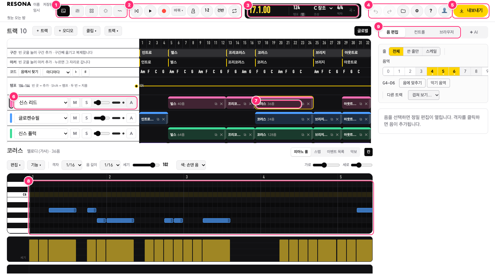

음을 찍고, 악기를 고르고, 믹스해서 파일로. 막히면 고른 부분에 대고 말하세요 — “이 부분 조금만 높게”.

바꾸기 전에 무엇을 할지 보여 주고, 들어 본 뒤 적용합니다. ⌘Z 한 번이면 되돌아갑니다.
피아노 롤·스텝·악보, 악기 55종, 이펙트 80여 종, 믹서와 오토메이션.
WAV · FLAC · MP3 · M4A, 트랙별 스템, MIDI, 악보, 영상과 함께 MP4.